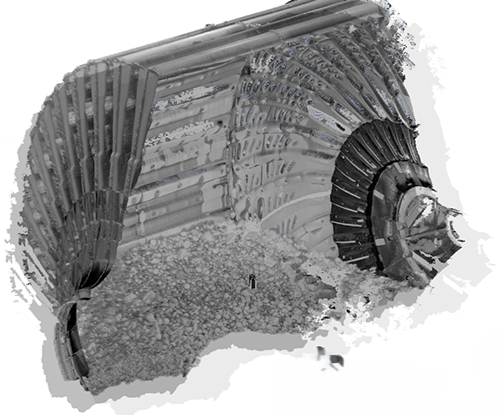

-
Feb 2023 - now
Machine Learning Engineer
ME elecmetal
3D SPATIAL DATA PROCESING
 Optimized internal software for SAG 3D spatial data processing by cutting external dependencies, automating manual tasks using advanced ML techniques, and ensuring optimal performance following DevOps best practices.
REAL TIME OBJECT TRACKING
 Designed and deployed computer vision systems for concentrator plants
using surveillance cameras. The system counts and tracks the movement of parts,
enhancing security and maintenance efficiency.
Designed and deployed computer vision systems for concentrator plants
using surveillance cameras. The system counts and tracks the movement of parts,
enhancing security and maintenance efficiency.
MOBILE APP FOR ESTIMATING SAG MILL FILLING PERCENTAGE
Developed RCNN-based vision model for calculating SAG mill filling percentage using phone photographs. Achieved <1% error compared to analyst calculations taking hours. Supported deployment in mobile application.
-
June 2021 - Feb 2023
Data scientist
ME elecmetal
PREDICTIVE MODELING
Analyzed and modeled patterns in company data history, uncovering key insights for informed decision-making. Presented information in various formats, including interactive graphs. .
SOFTWARE DEVELOPMENT
Integrated developed algorithms into company software following established standards for version control, documentation, and object-oriented design.
CLOUD SOLUTIONS

Many proposed solutions included a cloud component, ranging from data storage to messaging based on conditions within the data.
IOT SOLUTIONS
These solutions enable effective monitoring and control of device performance and status, facilitating early detection of issues and timely corrective actions.